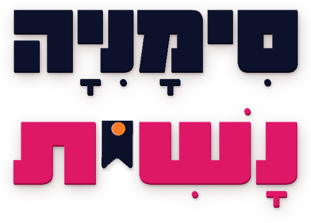
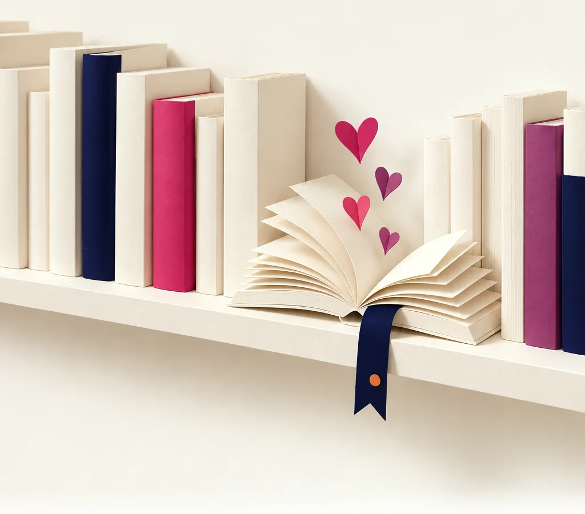
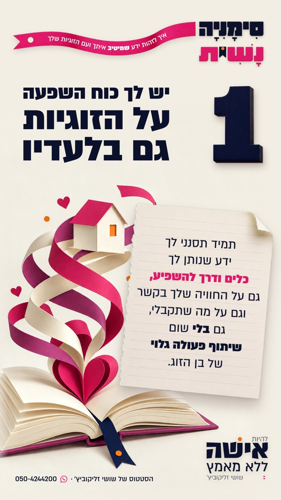

להיות אשה יודעת,
שהולכת בעולם עם פילטרים:)
סימנים שעוזרים לך לסנן מכל מה שאת שומעת וקוראת על זוגיות
רק את מה שמיטיב איתך ועם הזוגיות שלך
15 סימנים במייל, אחד כל 3 ימים, בחינם:)
בהרשמה את מאשרת לקבל ממני מיילים: את הסימנים, וגם עדכונים, תוכן שיווקי והזמנות לתהליכים שלי (בדרך כלל בנ.ב קטן בסוף המייל). אפשר להסיר בלחיצה, בכל רגע.
איזה כיף:) תציצי במייל, הסימן הראשון כבר בדרך אלייך
ואם לא הגיע, שווה להציץ גם בקידומי מכירות ובספאם:)

קרה לך פעם שלמדת משהו על זוגיות, והוא לא עשה לך טוב?
ספר, שיטה, הדרכה, תהליך, יועץ, מטפלת, מאמנת...
ולאורך זמן הוא רק הרחיק אותך
(מעצמך, מהאיש, מהשם...)
יש ידע על זוגיות שבאמת מיטיב ובונה אותנו.
אבל מניסיון עצוב של הרבה אנשים,
יש ידע שיכול לעשות נזק,
לקחת אותנו אחורה,
או סתם לא לעזור בכלל...
ידע שפותח פצע ומאד מבלבל,
ומערער את הביטחון שלך בכח ההשפעה הנשי שלך.
ובגלל שהרבה נשים נכוות מחוויות כאלו,
הן ננעלות ומאבדות את האמון.
וזה חבל!
אז מה עושים?
להגיף את התריסים ולהישאר לבד עם האתגרים?
זה לא פתרון אמיתי.
הפתרון הוא להיות אשה יודעת,
אשה שהולכת בעולם עם פילטרים:)
יש לה מערכת סינון וסימנים אישית,
שעוזרת לה גם לסנן החוצה את מה שפחות טוב לה,
וגם להכניס הביתה, ללב ולראש, רק את מה שעבר את הסינון שלה,
ולהתמסר לו באמון מלא.
למה סִימָנִיָה נָשִׁית?
אחרי שנים של תהליכים שעברתי עם עצמי,
וגם עם התלמידות שלי,
התפתחה לי רשימת סימנים כזו.
היא עזרה לי לעבור מאשה שלא נותנת אמון כמעט בשום דבר,
לאשה שמרשה לעצמה להתמסר באמון מלא.
את הרשימה הזו, המסננת המדויקת שלי,
קראתי סִימָנִיָה נָשִׁית.
סימניה, כי היא אוסף של סימנים,
וכמו סימניה בספר, היא נשארת איתך
בכל ספר, הדרכה או תהליך שאת פוגשת.
ונשית, כי כל סימן בה שומר
על כוח ההשפעה הנשי שלך:)
מה יגיע אלייך למייל
- 15 סימנים, סימן אחד בכל מייל, כל 3 ימים
- כרטיס מעוצב לכל סימן, להורדה ולשיתוף הלאה באהבה
- הסבר מורחב, במילים פשוטות, למה כל סימן חשוב
- משהו לבדוק כבר באותו יום, על ידע שכבר נמצא אצלך
ואל חשש,
הסימנים לא מדברים על שום תהליך או אדם מסוים,
וגם לא דווקא על התהליכים שלי.
רק עקרונות זיהוי, שימושיים ופשוטים.

כשיש לך סימניה משלך
את הסימנים עצמם תגלי במייל:) אבל הנה מה שמשתנה כשיש לך אותם.
פתאום את יכולה להגיד לעצמך בפשטות:
״זה - מעולה, עובר.״ וגם ״זה - לא. לא נכנס אלי לחיים.״
- פחות בלבול מכל עצהמקורות ידע שסותרים זה את זה כבר לא ישאירו אותך מתלבטת באמצע, מה נכון לזוגיות שלך.
- לבחור, ולא לנחשספר שאת קוראת, שיטה שאת עוקבת אחריה, ואפילו אנשי מקצוע שאת נעזרת בהם - תוכלי לבחון אותם בביטחון.
- רמזור משלך, מול כל ידעאדום - לא עוברת דרכו. כתום - צריכה לבדוק, זהירות. ירוק - אפשר להיפתח ולהיכנס פנימה.
- זמן וכסף רק למה שמיטיבבלי הפחד להשקיע זמן, אנרגיה וכסף על משהו שאולי לא יעבוד, או שיהרוס גם את מה שכבר קיים וטוב.
- להרים שוב את התריסיםבמקום להינעל ולאבד את האמון בידע שיכול להיטיב איתך, להתחיל לסמוך.
- לפתוח את הלב, בלי לאבד את הראשגם להיות חשדנית בקטע טוב, כדי להיזהר ולהישמר, וגם להתמסר באמון מלא, בלב שלם ורגוע.
רוצה את הסימניה?
15 סימנים מחכים לך, ויגיעו אלייך למייל אחד אחד
(ומותר גם להתווכח איתי:)
נעים מאוד, אני שושי זליקוביץ׳
נשואה 25 שנה ואמא לשמונה ילדים, תודה להשם.
מאמנת מנטלית, מטפלת בפסיכותרפיה הוליסטית,
מייסדת הדרך של אשה ללא מאמץ,
ומייסדת בית הספר שלם להכשרת מאמנות מנטליות.
חמש עשרה שנה אני מלווה נשים בשינוי, בריפוי ובהשפעה במערכות יחסים.
בדרך הזו עברו אלפי תלמידות.
אשה ללא מאמץ היא דרך להשפיע בזוגיות
בלי לרדוף ובלי להילחם,
מתוך עצמאות, ביטחון ושקט פנימי.
כי את לא צריכה להיות אשה אחרת
כדי שתהיה לך זוגיות אחרת